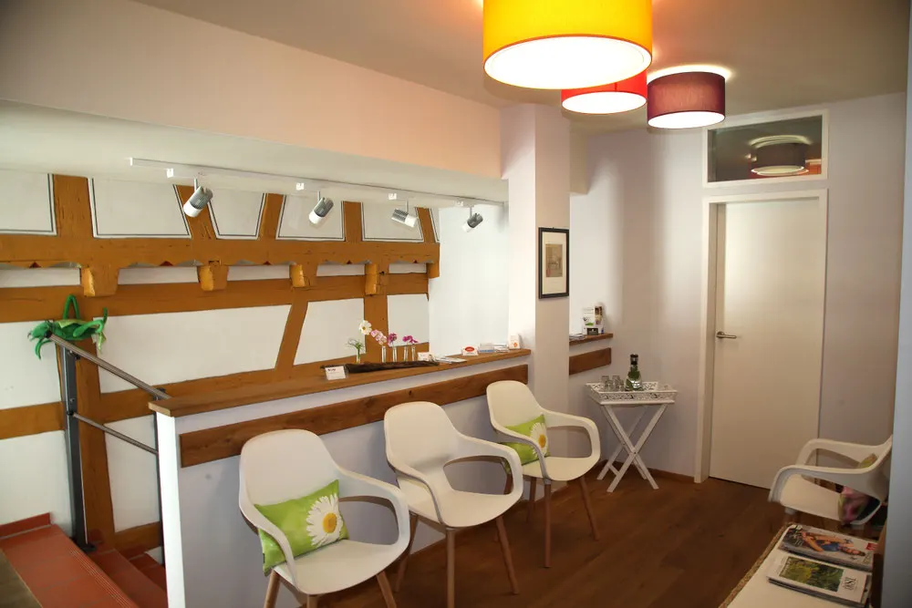
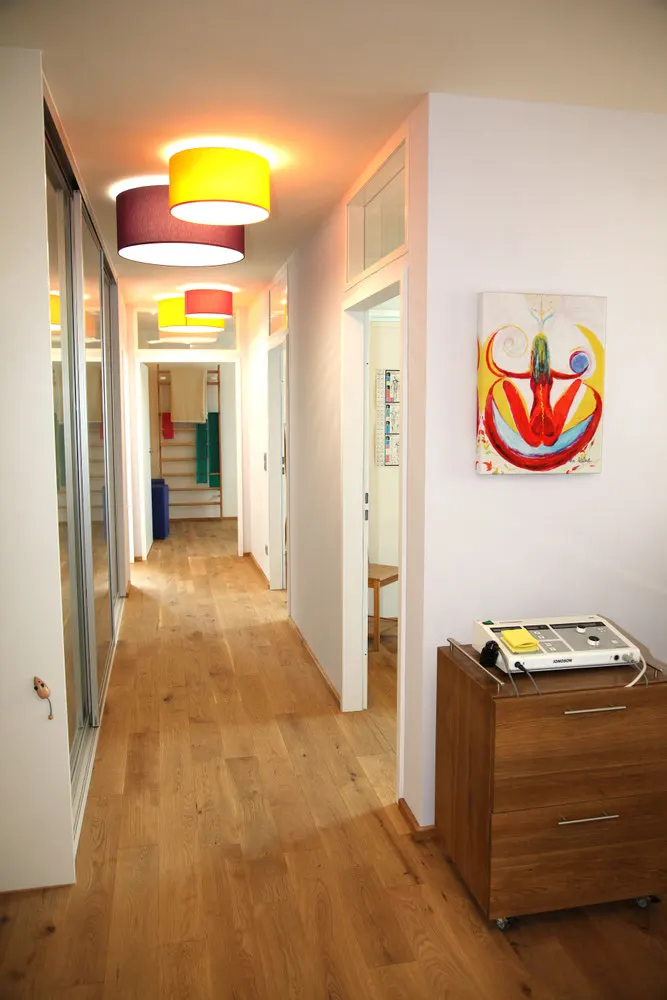
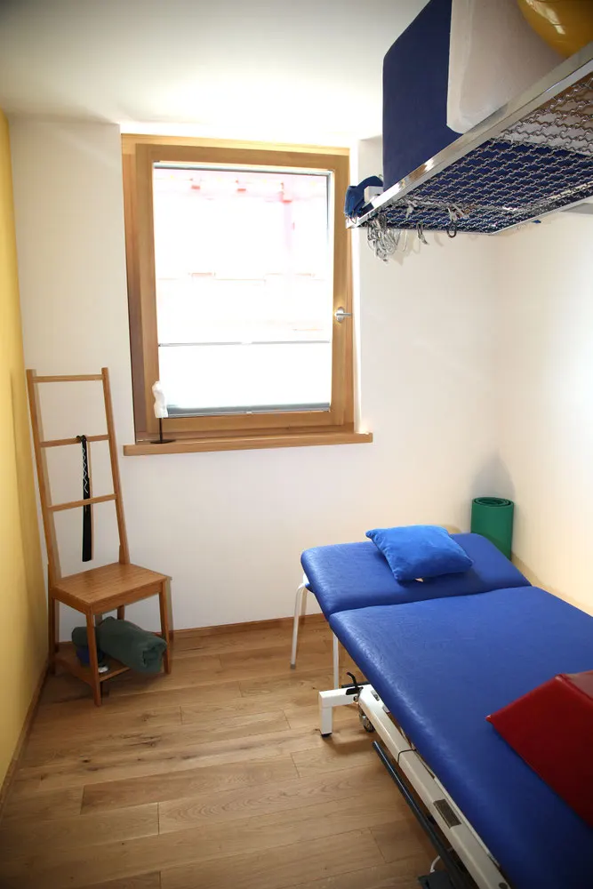
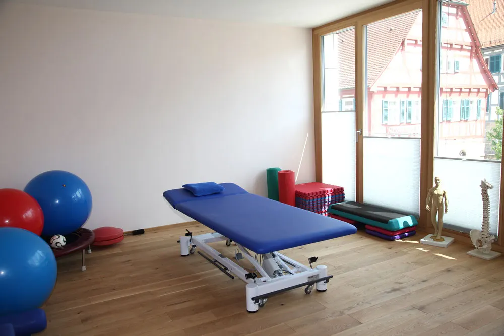
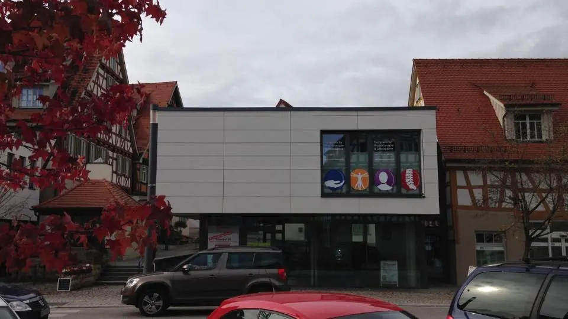
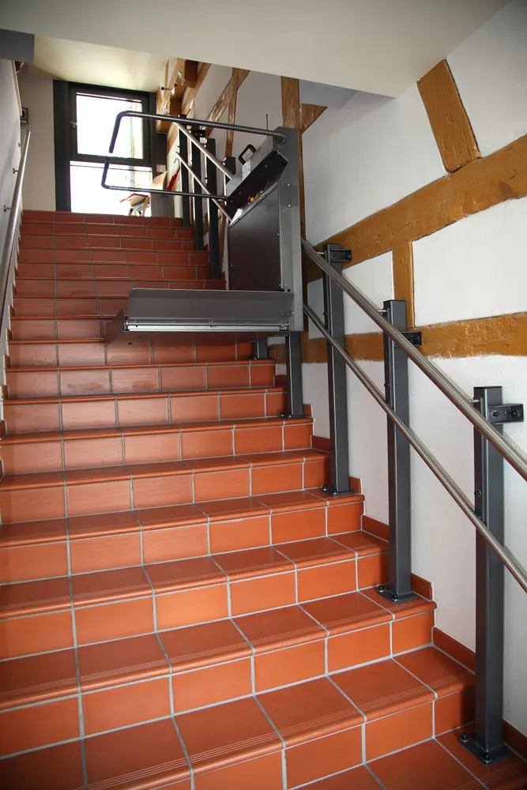

Unsere Praxis
Einblicke in die Räume am Oberdorf
Ein Rundgang durch Wartebereich, Therapieräume und Trainingsbereich, bevor Sie zum ersten Mal kommen.







Zugang
Mit Treppenlift ins Obergeschoss
Die Praxis liegt in einem Haus mit Fachwerk, und die Therapieräume sind über eine Treppe erreichbar. Ein Treppenlift bringt Sie bequem nach oben. Wenn Sie Hilfe beim Einsteigen brauchen, rufen Sie uns vorher kurz an unter 07181 9907607.
Das Haus steht im Oberdorf 4 in Winterbach, gegenüber der Michaels Apotheke. Adresse, Zeiten und Route
Hinweis für den Entwurf: Bitte kurz bestätigen, ob der Treppenlift für alle Patienten nutzbar ist und wohin er führt.